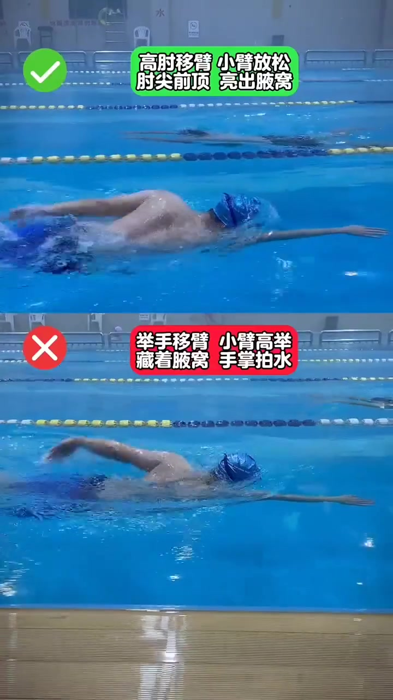
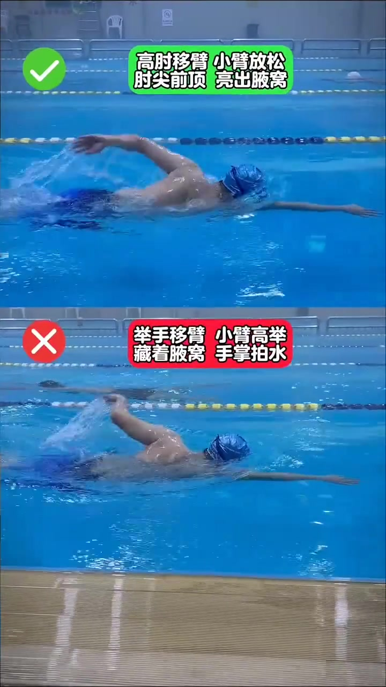
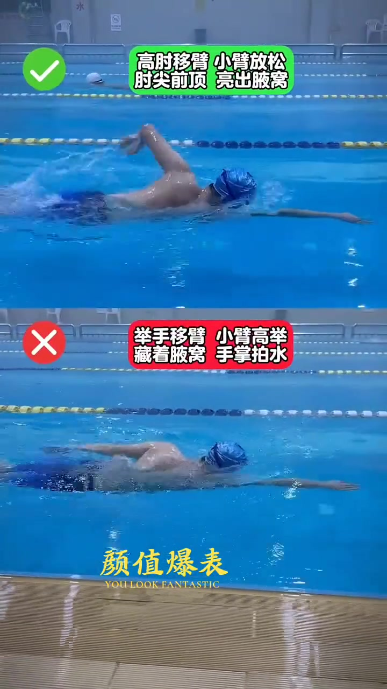
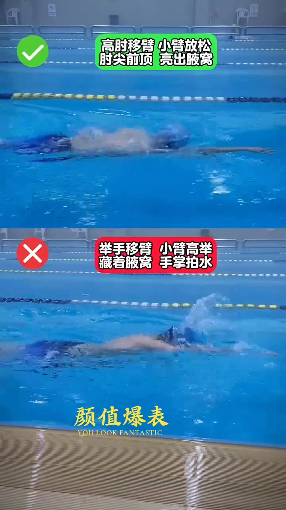
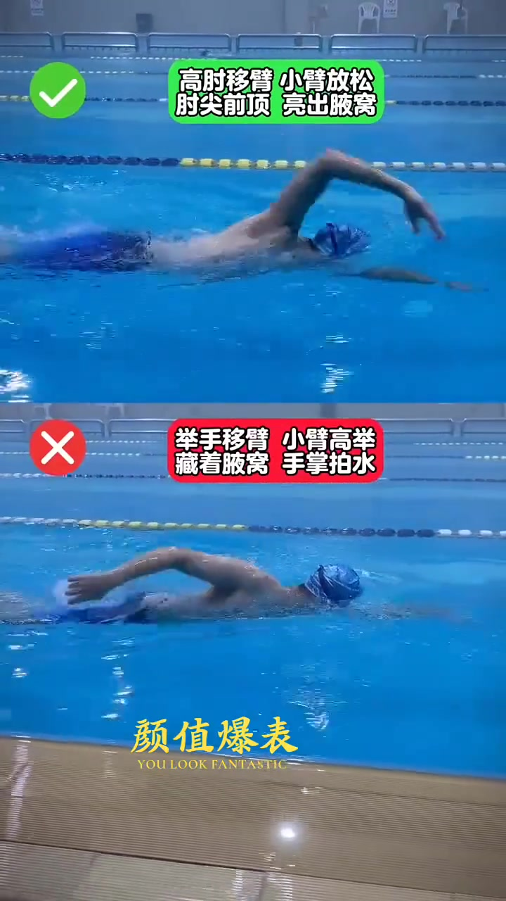
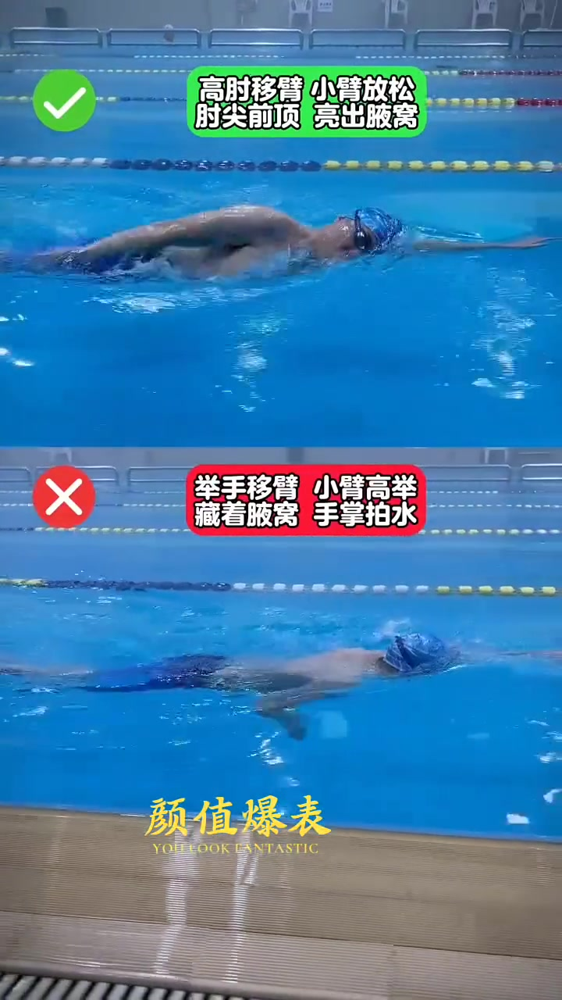

开场：分屏对比的设定（00:00）
视频一开始就是分屏画面，没有任何过渡或口播引入。上格泳者标注绿色✓，配文字条「高肘移臂 小臂放松 肘尖前顶 亮出腋窝」；下格泳者标注红色✗，配文字条「举手移臂 藏着腋窝 手掌拍水 小臂高举」。这两条文字条在全片 13 秒里始终固定悬浮在画面上方，是唯一的“讲解者”。

这个视频没有可辨认的开场背景介绍——不知道拍摄场景、教练身份，笔记文案也只有一串话题标签（#游泳技巧分享 #游泳训练 #游泳打卡 #自由泳 #自由泳划手 #自由泳教学 #自由泳初学者 #自由泳移臂），没有正文说明。因此这条视频的“为什么讲这个话题”只能从画面本身和标题推断：这是一条聚焦「自由泳移臂」单一动作细节的对比科普短视频。
00:03–00:10：移臂全过程的持续对照
从第 3 秒开始，两位泳者持续同步游进，画面反复经过“划水入水→抱水推水→移臂出水→空中回摆→再次入水”的循环。因为视频只有 13 秒却包含至少两个完整划水周期，能看到同一个对比结构被重复展示了不止一次。

大约从第 4 秒起，画面下方开始出现一条金色小字水印「颜值爆表 / YOU LOOK FANTASTIC」，并持续到视频结尾。这看起来是剪辑软件或美颜类模板自带的品牌水印，与游泳动作讲解内容本身没有直接关系，但确实与标题「高肘决定美丑」形成了某种呼应（水印强调“好看”，标题强调“决定美丑”）。


整段视频里能观察到的核心差异始终集中在“肘部相对身体和水面的高度”与“小臂的姿态”这两点：上格泳者移臂时肘部先于手掌抬起、小臂自然下垂放松；下格泳者则是手掌或整只手臂先抬起，肘部反而被压低或跟不上，小臂被举得很直很高。视频没有用语言解释这背后的力学原理（比如为什么高肘移臂更省力或更符合自由泳技术要领），只用红绿对错符号给出了明确的价值判断，没有展开论证过程。
00:10–00:13：结尾与循环


视频在第 13 秒左右直接结束，没有总结语、没有行动号召文字、也没有额外的品牌信息露出（除了前面提到的「颜值爆表」水印）。结尾没有明显的收束设计，更像是一段可以循环播放的示范素材：只要红绿文字条和分屏对照结构一直悬浮在画面上，观众随时进入都能看懂对比的含义。
详细文字转录
以下内容按 Whisper 原始分段完整呈现。本视频全程为背景配乐，没有可辨识的人声讲解；Whisper 输出的「字幕by索兰娅」是已知的幻觉字幕模式（在无人声/纯配乐视频中反复出现过的固定误识文本），不代表视频中真实存在这句话，正文分析完全不依赖这段转录，仅依据画面文字条与截图。
-
字幕by索兰娅背景配乐/无口播，Whisper 幻觉，非讲解内容